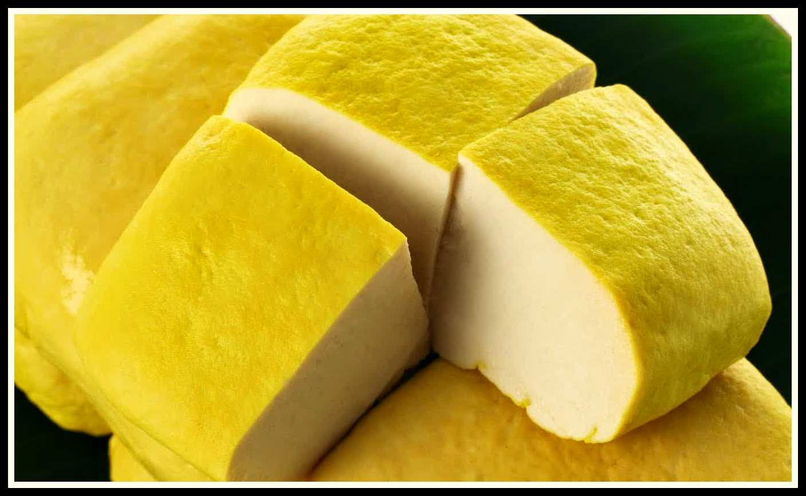

Yellow Tofu
image taken from: http://4.bp.blogspot.com/-cV9DXq-blHE/Vd70yzmgCeI/AAAAAAAABj8/HrBe2hMXszY/s1600/tahu%2Bkuning.jpg
Yellow tofu is a tofu that got its yellow color from turmeric or a synthetic coloring. Yellow tofu is specialty from Kediri, because many of its production center is in Kediri. Yellow tofu has a square shape and somewhat thin. This tofu is denser than the usual tofu, so when sliced its not easily pulverized. From the taste more delicious than a normal tofu without any sour taste.
explanation taken from: https://id.wikipedia.org/wiki/Tahu_Kuning